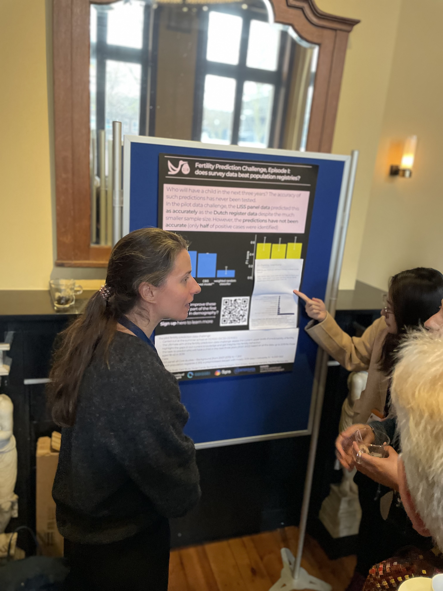
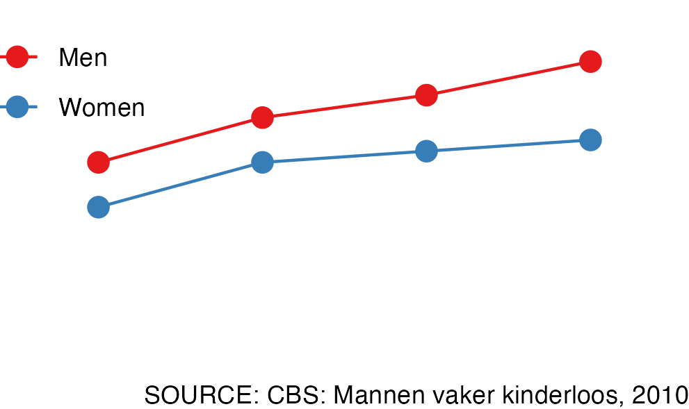
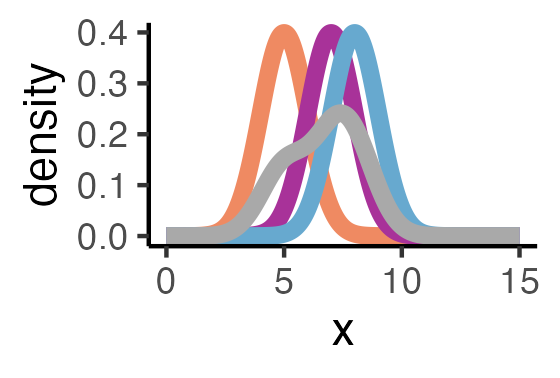
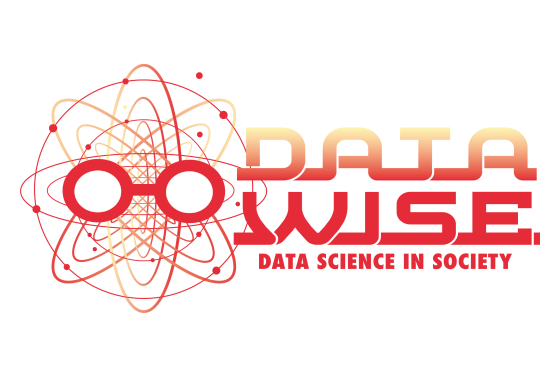
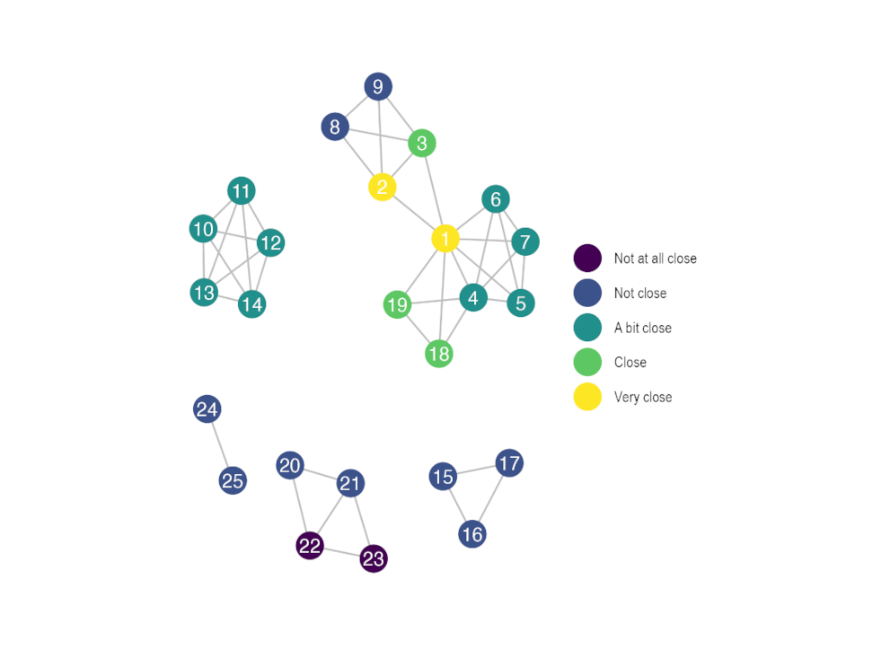
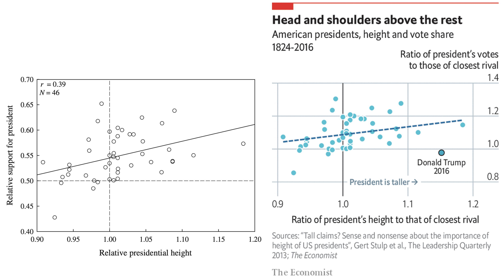
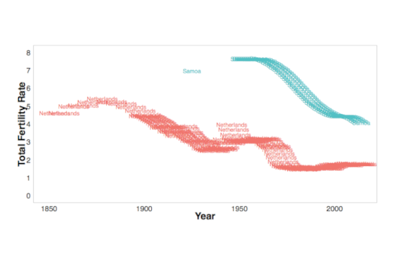
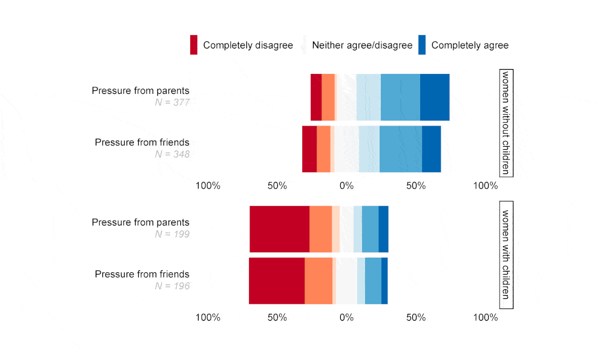
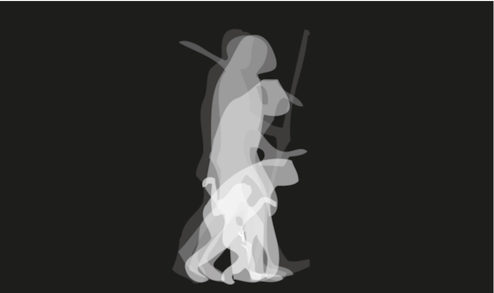

Everything in chronological order

Lisa won the best poster prize!

Wat gedachten over kinderloosheid in Nederland naar aanleiding van een interview over het onderwerp

Where I attempt to understand density plots and get stuck on Fast Fourier Transforms.
I have a new website. The reason is that the old website (partly) stopped functioning. I went from Hugo to Quarto. I’ll describe some difficulties.
How a focus on prediction can lead to better understanding.
Hannah Dietzenbacher received no less than three (master’s) thesis prizes. I was lucky enough to supervise her.



Given the upcoming US elections, several media outlets have shown interest in my research on the heights of US presidents. The Economist improved my graphs.
Recently, the Department of Sociology at Groningen celebrated its 80-year existence.


Humans are a weird species.
